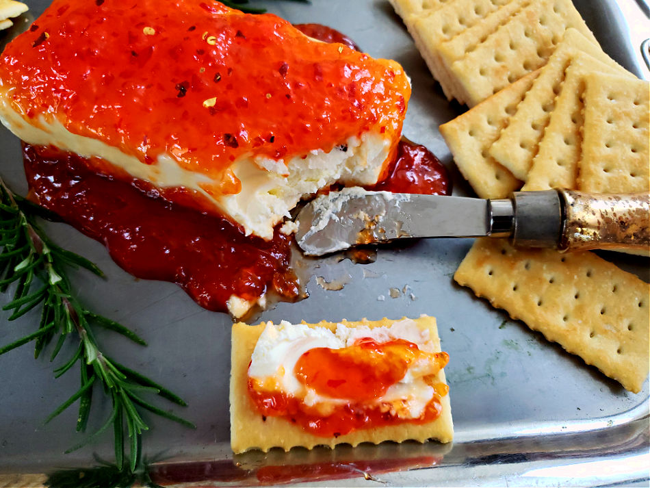

Leslie's Delicacy

Description
This easy to make happytizer is sure to wow your guests. It takes
less than 5 minutes to prepare but it will be a party favorite!
Ingredients
- 1 8oz package cream cheese
- 2/3 cup jalapeno jelly (red or green)
- choice of crackers
Steps
- Open the brick of cream cheese and place it on a plate.
-
Spread the jelly evenly over the top. Serve with a small knife for
spreading or use a hearty cracker that will not break.